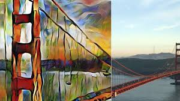

Rishab Kaup, Karthik Praturu, Noah Sutter and Austen Schunk Fall 2018 CS 4476 Computer Vision: Final Project Georgia Tech
Project Proposal
Problem Statement: Style Transfer
For our project, we want to be able to transfer the style of an image, specifically a painting, to another image. Below is a specific list of goals or milestones we wish to accomplish. These goals are in order of how difficult we have judged them to be:
Take in an input picture and convert it's style to a specific painting
Have a list of preselected paintings that one can choose from to apply it's style to an input image
Be able to convert both static images and videos to a specific painting style
Implement the style transfer using an Android app, so the input can be any precaptured image/video
Show a live video conversion of style from camera input in an Android app
Examples of style transfer, with static image and video

This general procedure has been done before, as evidenced by the examples. However, there are not many apps that handle this functionality, and there are no apps that are able to do direct, live style transfer. We will be attempting to implement all of these goals, and hopefully succeeding in all including the last
Approach
To implement style transfer we will be looking at the following papers:
Provide details about the experimental set up (number of images/videos, number of datasets you experimented with, train/test split if you used machine learning algorithms, etc.). Describe the evaluation metrics you used to evaluate how well your approach is working. Include clear figures and tables, as well as illustrative qualitative examples if appropriate. Be sure to include obvious baselines to see if your approach is doing better than a naive approach (e.g. for classification accuracy, how well would a classifier do that made random decisions?). Also discuss any parameters of your algorithms, and tell us how you set the values of those parameters. You can also show us how the performance varies as you change those parameter values. Be sure to discuss any trends you see in your results, and explain why these trends make sense. Are the results as expected? Why?